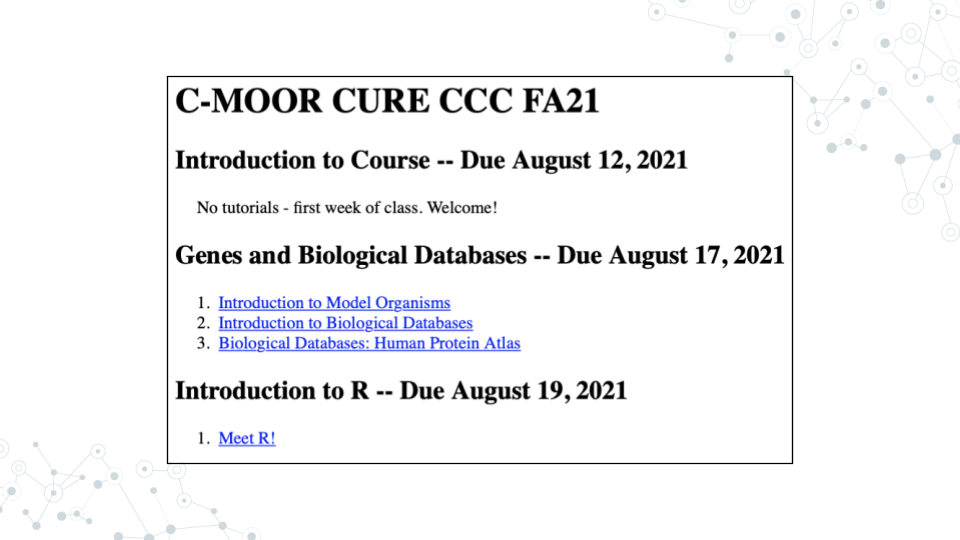

0.2 First LearnR
Interactive tutorials introducing various data science concepts
0.2.1 Purpose
The purpose of this assignment is to (1) join the class SciServer group so you can access course materials, and (2) learn how to access the tutorials for this course on SciServer.

0.2.2 Learning Objectives
- Accept invitation to join class SciServer Group
- Start up a C-MOOR LearnR compute container
- Complete your first LearnR tutorial
- Delete your C-MOOR LearnR compute container
0.2.3 Introduction
Before beginning this assignment, you should have already created a SciServer account and submitted your SciServer username to your instructor. In this assignment you will learn how to set up a “compute container” on SciServer. Compute containers are how you use programs on SciServer. In this course you will use two compute containers: “C-MOOR LearnR” has tutorials that will teach you how to run data analyses, and “C-MOOR R-Studio” is where you will work on your own data analysis projects. This assignment shows you how to set up the C-MOOR LearnR compute container and start up your first tutorial.
0.2.4 Instructions
0.2.4.1 Accept invitation to join class SciServer group
This video (video)(slides) shows you how to join a SciServer group. You can follow along with the video, or follow the steps below.
- Open sciserver.org in a web browser and log in to your account.
- Click “Groups”
- On the left, you should see a list of all the groups you have joined or been invited to. Click on the name of the group for this course, then click “Accept invitation”.
- Your instructor must have your username to invite you to the group. If you do not see an invitation, contact your instructor with your SciServer username.
- Confirm that you can access course data
- On the top menu bar, click “Files”
- On the left-hand menu, click “Data Volumes”
- Confirm that you see “C-MOOR-Data”
- Confirm that you can access course computing resources
- Click “Home” in the top menu to return to the home page.
- Scroll down to the second set of boxes and click “Compute”
- Click “Create container”
- In the “Compute Image” drop-down menu, confirm that you can see “C-MOOR LearnR” and “C-MOOR R-Studio”
- Under “Data Volumes”, confirm that you can see “C-MOOR Data”
- You can close the Create Container dialog box (by clicking the “X” in the top right) once you’ve confirmed that you can see the C-MOOR content
0.2.4.1.1 Resources
0.2.4.2 Start up a “C-MOOR LearnR” compute container
This video (video)(slides) shows you how to create and start up a C-MOOR LearnR compute container. You can follow along with the video, or follow the steps below.
- Open sciserver.org in a web browser and log in to your account.
- If you are already logged in, click “Home” in the top menu to return to the home page.
- Scroll down to the second set of boxes and click “Compute”
- Click “Create container”
- Give your container a name. This can be anything you like, but it’s useful if it says something about the purpose of the container so you can tell your containers apart. You could name this container “Tutorials”, since you’ll be using it to access tutorials.
- In the “Compute Image” drop-down menu, select “C-MOOR LearnR”
- Under “Data Volumes”, check the box next to “C-MOOR Data”
- Click “Create”. This may take a moment.
- You should now see a new entry in your list of containers
- “Created At” should be a few moments ago.
- “Name” should be the name you chose
- “Image” should be “C-MOOR LearnR”
- Start your C-MOOR LearnR container by clicking on its name (whatever name you chose when you created it). This will open in a new tab.
- You should see a list of tutorials, organized by date. 
- If instead you see an error message, you most likely forgot to check the box next to “C-MOOR Data” when you created the container.

- If you see something else, you may have picked the wrong “Compute Image” from the drop-down menu.
If anything goes wrong, you can always delete your container by clicking the red “X” in the last column, and create a new container.
0.2.4.2.1 Resources
0.2.4.3 Complete your first LearnR tutorial
- If you’re not there already, go to the SciServer compute page and start up the C-MOOR LearnR container.
- Open sciserver.org in a web browser and log in to your account.
- If you are already logged in, click “Home” in the top menu to return to the home page.
- Scroll down to the second set of boxes and click “Compute”.
- Start your C-MOOR LearnR container by clicking on its name.
- Click on “Biological Databases”. The tutorial will open in a new tab.
- Complete the tutorial.
0.2.4.3.1 Resources
0.2.4.4 Delete your C-MOOR LearnR compute container
Compute containers are meant to be temporary, and you can only have 3 containers total on SciServer. So it’s generally a good idea to clean up after yourself and delete your containers when you’re done using them. Also, in this course, we will be updating the tutorials on the C-MOOR LearnR container, and you will need to create a new container to get the latest updates.
Deleting your container will delete your progress in a tutorial, so don’t delete the container until you have completed the tutorial and submitted any required items to your instructor. Later on in the course you will learn how to save things permanently on SciServer.
To delete a container:
- If you’re not there already, go to the SciServer compute page.
- Open sciserver.org in a web browser and log in to your account.
- If you are already logged in, click “Home” in the top menu to return to the home page.
- Scroll down to the second set of boxes and click “Compute”.
- Start your C-MOOR LearnR container by clicking on its name.
- Find the container you want to delete.
- Click on the red “X” in the last column.
0.2.5 Footnotes
0.2.5.1 Contributions and Affiliations
- Katherine Cox, Johns Hopkins University
- Frederick Tan, Carnegie Institution
Last Revised: May 13, 2021